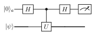
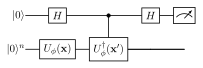
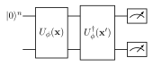
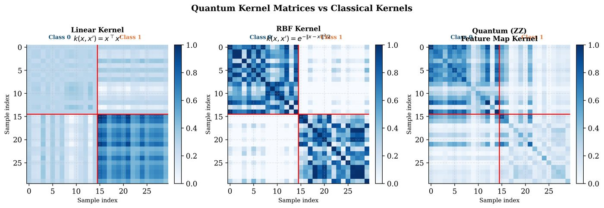

Chapter 8: Quantum Kernel Methods¶
Quantum kernels provide one of the most theoretically grounded bridges between quantum computing and machine learning. By measuring the inner product between quantum feature states, we obtain a kernel function that can be plugged into any classical kernel method — SVM, Gaussian process, kernel PCA — while potentially capturing data similarities that are intractable to compute classically.
Learning Objectives
By the end of this chapter, you will be able to:
-
Define and estimate quantum kernels via the swap test and Hadamard test
-
Analyze the RKHS induced by a quantum feature map
-
Apply quantum kernel alignment to train the feature map
-
Understand projected quantum kernels and classical shadow kernels
-
Critically evaluate quantum kernel advantage claims
8.1 From Classical to Quantum Kernels¶
In classical kernel methods, \(k(\mathbf{x},\mathbf{x}') = \langle\phi(\mathbf{x}),\phi(\mathbf{x}')\rangle_\mathcal{H}\) for some (possibly infinite-dimensional) feature map \(\phi\).
The quantum kernel analogously uses a quantum feature map \(|\phi(\mathbf{x})\rangle = U_\phi(\mathbf{x})|0\rangle^{\otimes n}\):
This is the fidelity kernel: \(k_Q(\mathbf{x},\mathbf{x}') = F(|\phi(\mathbf{x})\rangle,|\phi(\mathbf{x}')\rangle)\).
Note
The quantum kernel defines a RKHS associated with the feature map \(|\phi(\mathbf{x})\rangle\). The SVM classification function in this RKHS is: \(f(\mathbf{x}) = \sum_i \alpha_i y_i k_Q(\mathbf{x},\mathbf{x}_i)\), identical to classical kernel SVM with \(k \to k_Q\).
8.2 Quantum Kernel Estimation¶
8.2.1 Hadamard Test¶
The Hadamard test estimates \(\text{Re}\langle\psi|U|\psi\rangle\) using an ancilla qubit:

For computing \(k_Q(\mathbf{x},\mathbf{x}') = |\langle 0|U_\phi^\dagger(\mathbf{x}')U_\phi(\mathbf{x})|0\rangle|^2\), set \(U = U_\phi^\dagger(\mathbf{x}')U_\phi(\mathbf{x})\) and \(|\psi\rangle = |0\rangle^{\otimes n}\):

\(P(0) = \frac{1}{2}(1 + \text{Re}\langle\phi(\mathbf{x}')|\phi(\mathbf{x})\rangle)\), \(k_Q = |2P(0)-1|^2\) when the kernel is real.
8.2.2 Direct Fidelity Estimation¶
More practical: apply \(U_\phi(\mathbf{x})\), then \(U_\phi^\dagger(\mathbf{x}')\), and measure probability of \(|0\rangle^{\otimes n}\):
This requires \(O(1/\epsilon^2)\) shots to estimate to precision \(\epsilon\).

Solved Example 8.1
Problem: Compute \(k_Q(\mathbf{x},\mathbf{x}')\) for angle encoding with \(\mathbf{x}=[0.5]\) and \(\mathbf{x}'=[1.0]\) on 1 qubit.
Solution: \(|\phi(0.5)\rangle = \cos(0.25)|0\rangle+\sin(0.25)|1\rangle\), \(|\phi(1.0)\rangle = \cos(0.5)|0\rangle+\sin(0.5)|1\rangle\). \(\langle\phi(1.0)|\phi(0.5)\rangle = \cos(0.5)\cos(0.25)+\sin(0.5)\sin(0.25) = \cos(0.5-0.25) = \cos(0.25)\). \(k_Q = \cos^2(0.25) = 0.938\).
8.3 Quantum Kernel Properties¶

Positive definiteness: The fidelity kernel \(k_Q(\mathbf{x},\mathbf{x}')\) is always positive definite (it is the squared norm of a vector in a Hilbert space). Therefore it satisfies Mercer’s conditions.
Universality (Schuld 2021): A quantum kernel is universal for a domain \(\mathcal{X}\) if its associated RKHS is dense in \(C(\mathcal{X})\). IQP-based kernels can be universal for appropriate choices of feature map.
Kernel alignment:
Measures how well kernel matrix aligns with labels. Used as training objective for trainable quantum kernels.
8.4 Projected Quantum Kernels¶
Huang et al. (2021) (Huang et al. 2021) introduced projected quantum kernels that avoid the exponential concentration problem:
where \(\rho_k(\mathbf{x}) = \text{Tr}_{\neq k}[|\phi(\mathbf{x})\rangle\langle\phi(\mathbf{x})|]\) is the single-qubit reduced density matrix of qubit \(k\).
Classical shadow kernels: Compute \(\rho_k\) efficiently using classical shadows (randomized measurements), avoiding direct fidelity estimation.
8.5 Quantum Kernel Advantage¶
Theorem 8.1 (Quantum Kernel Advantage (Liu et al. 2021))
There exists a learning problem and a quantum kernel \(k_Q\) such that:
-
A quantum kernel SVM achieves accuracy \(\geq 1-\epsilon\) with \(O(\text{poly}(n))\) samples
-
Any classical kernel method requires \(\Omega(2^n)\) samples
(under standard cryptographic assumptions).
Warning
This advantage requires: (1) the problem must be constructed to favor the quantum kernel, (2) quantum hardware access with low noise, and (3) efficient kernel estimation. For naturally occurring datasets, provable quantum kernel advantage has not been demonstrated.
8.6 Trainable Quantum Kernels¶
Instead of a fixed feature map \(U_\phi(\mathbf{x})\), use a parameterized map \(U_\phi(\mathbf{x};\boldsymbol{\lambda})\) and train \(\boldsymbol{\lambda}\) to maximize kernel-target alignment (Hubregtsen et al. 2022):
Gradients of KTA w.r.t. \(\boldsymbol{\lambda}\) via parameter shift rule.
import pennylane as qml
import numpy as np
from sklearn.svm import SVC
from sklearn.datasets import make_moons
from sklearn.model_selection import train_test_split
n_qubits = 4
dev = qml.device("default.qubit", wires=n_qubits)
@qml.qnode(dev)
def kernel_circuit(x1, x2):
"""Compute |<phi(x2)|phi(x1)>|^2 via overlap circuit."""
# Encode x1
qml.AngleEmbedding(x1[:n_qubits], wires=range(n_qubits))
qml.StronglyEntanglingLayers(
np.random.randn(2, n_qubits, 3), wires=range(n_qubits))
# Adjoint of x2 encoding
qml.adjoint(qml.AngleEmbedding)(x2[:n_qubits], wires=range(n_qubits))
return qml.probs(wires=range(n_qubits))
def quantum_kernel(X1, X2):
"""Compute quantum kernel matrix K[i,j] = k_Q(X1[i], X2[j])."""
n1, n2 = len(X1), len(X2)
K = np.zeros((n1, n2))
for i in range(n1):
for j in range(n2):
probs = kernel_circuit(X1[i], X2[j])
K[i, j] = probs[0] # P(|000...0>) = |<0|U_dag U|0>|^2
return K
# Dataset
X, y = make_moons(n_samples=60, noise=0.15, random_state=42)
X_train, X_test, y_train, y_test = train_test_split(X, y, test_size=0.3)
# Compute kernel matrices
K_train = quantum_kernel(X_train, X_train)
K_test = quantum_kernel(X_test, X_train)
# Train SVM with precomputed quantum kernel
svm = SVC(kernel='precomputed')
svm.fit(K_train, y_train)
accuracy = svm.score(K_test, y_test)
print(f"Quantum Kernel SVM Accuracy: {accuracy:.3f}")
# Kernel target alignment
def kernel_target_alignment(K, y):
y_vec = 2*y - 1 # to {-1, +1}
kta = np.dot(K.flatten(), np.outer(y_vec, y_vec).flatten())
return kta / (np.linalg.norm(K) * np.linalg.norm(np.outer(y_vec, y_vec)))
kta = kernel_target_alignment(K_train, y_train)
print(f"Kernel-Target Alignment: {kta:.4f}")
8.7 Chapter Summary¶
Chapter Summary
-
Quantum kernel: Fidelity \(k_Q(\mathbf{x},\mathbf{x}')=|\langle\phi(\mathbf{x})|\phi(\mathbf{x}')\rangle|^2\). Always positive definite. Plugs into any classical kernel method.
-
Estimation: Direct overlap (measure \(|0\rangle\) probability after \(U_\phi U_\phi^\dagger\)) or Hadamard test. Requires \(O(1/\epsilon^2)\) shots.
-
Projected kernels: Avoid exponential concentration by using reduced density matrices of individual qubits.
-
Trainable kernels: Optimize feature map parameters via kernel alignment (KTA) to maximize separability.
-
Quantum advantage: Provable in theory (Liu 2021) for constructed problems. Not yet demonstrated on natural datasets.
Exercises
Exercise . Show that the quantum fidelity kernel \(k_Q(\mathbf{x},\mathbf{x}') = |\langle\phi(\mathbf{x})|\phi(\mathbf{x}')\rangle|^2\) is positive semi-definite.
Exercise . For angle encoding on 1 qubit, show that \(k_Q(\mathbf{x},\mathbf{x}') = \cos^2\!\big(\frac{x-x'}{2}\big)\). Plot \(k_Q(0, x')\) for \(x'\in[-\pi,\pi]\).
Exercise . Derive the gradient of the kernel-target alignment \(\text{KTA}(\mathbf{K}_\lambda,\mathbf{y})\) with respect to a parameter \(\lambda_i\) in the feature map circuit.
Exercise . Implement the projected quantum kernel using classical shadows in PennyLane. Compare its kernel matrix to the standard fidelity kernel on a 4-qubit system.
Further Reading
-
Schuld & Killoran (2019) (Schuld et al. 2019) — quantum machine learning in feature Hilbert spaces
-
Havlíček et al. (2019) (Havlíček et al. 2019) — supervised learning with quantum enhanced feature spaces
-
Huang et al. (2021) (Huang et al. 2021) — power of data in quantum machine learning
-
Liu et al. (2021) (Liu et al. 2021) — rigorous quantum advantage for learning